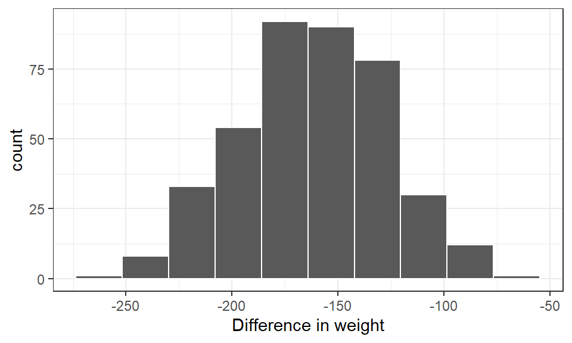

Code
df_data1 <-
read_delim(
file = "C:/Dataset/data1.txt",
delim = "\t",
col_types = c("c", "f", "i","i")
) %>%
mutate(sex = factor(sex))So far, we have dealt with descriptive statistics and the analysis of the sample data collected. However, the bane of most statistical analysis is to make inferences about the population as a whole. In this section, we mainly do an inferential analysis of continuous variables.
To determine the confidence interval of the mean of a numeric variable in R, we use the One Sample Student’s T-test. The assumptions for the validity of this test are:
With our sample considered to be randomly selected and a sample size of 140, we apply the One-sample T-test as below.
We first import the data
df_data1 <-
read_delim(
file = "C:/Dataset/data1.txt",
delim = "\t",
col_types = c("c", "f", "i","i")
) %>%
mutate(sex = factor(sex))And then summarize it below
df_data1 %>%
summarytools::dfSummary(graph.col = F)Data Frame Summary
df_data1
Dimensions: 140 x 4
Duplicates: 0
--------------------------------------------------------------------------------------
No Variable Stats / Values Freqs (% of Valid) Valid Missing
---- ------------- ------------------------- -------------------- ---------- ---------
1 id 1. 1 1 ( 0.7%) 140 0
[character] 2. 10 1 ( 0.7%) (100.0%) (0.0%)
3. 100 1 ( 0.7%)
4. 101 1 ( 0.7%)
5. 102 1 ( 0.7%)
6. 103 1 ( 0.7%)
7. 104 1 ( 0.7%)
8. 105 1 ( 0.7%)
9. 106 1 ( 0.7%)
10. 107 1 ( 0.7%)
[ 130 others ] 130 (92.9%)
2 sex 1. Female 64 (45.7%) 140 0
[factor] 2. Male 76 (54.3%) (100.0%) (0.0%)
3 weight Mean (sd) : 12.2 (6.3) 28 distinct values 140 0
[numeric] min < med < max: (100.0%) (0.0%)
2 < 11 < 33
IQR (CV) : 7 (0.5)
4 height Mean (sd) : 90.9 (21.3) 70 distinct values 139 1
[numeric] min < med < max: (99.3%) (0.7%)
49 < 88 < 137
IQR (CV) : 33 (0.2)
--------------------------------------------------------------------------------------| variable | n | min | max | median | iqr | mean | sd | se | ci |
|---|---|---|---|---|---|---|---|---|---|
| height | 139 | 49 | 137 | 88 | 33 | 90.9 | 21.3 | 1.81 | 3.58 |
df_data1 %>%
meantables::mean_table(height) | response_var | n | mean | sd | sem | lcl | ucl | min | max |
|---|---|---|---|---|---|---|---|---|
| height | 139 | 90.9 | 21.3 | 1.81 | 87.3 | 94.4 | 49 | 137 |
For sex stratified confidence intervals we have
df_data1 %>%
group_by(sex) %>%
meantables::mean_table(height)| response_var | group_var | group_cat | n | mean | sd | sem | lcl | ucl | min | max |
|---|---|---|---|---|---|---|---|---|---|---|
| height | sex | Female | 63 | 92.2 | 23 | 2.89 | 86.4 | 98 | 49 | 137 |
| height | sex | Male | 76 | 89.8 | 20 | 2.29 | 85.2 | 94.3 | 55 | 131 |
Assuming the objective of the data collected was to determine if the average weight of our population was similar to a population with a known mean weight of 14kgs.
Our null hypothesis is:
H0: There is no difference in mean weight between our population and a population with mean weight of 14kgs.
To test this hypothesis we use the One sample t-test after we have satisfied ourselves that the assumptions for its use have been met.
df_data1 %$%
t.test(weight, mu=14) %>%
broom::tidy()| estimate | statistic | p.value | parameter | conf.low | conf.high | method | alternative |
|---|---|---|---|---|---|---|---|
| 12.2 | -3.32 | 0.00113 | 139 | 11.2 | 13.3 | One Sample t-test | two.sided |
The p-value of 0.001 is the probability that our sample could have come from a population with a mean weight of 14kgs. Since this is very small we reject the null H0 at a 5% significance level and conclude that our population mean weight is significantly different from 14kgs. The confidence interval generated is that of our sample mean. With the hypothesized value of 14kgs outside the confidence interval of the mean we conclude that there is insuficient evidence to suggest that the mean weight of our population is 14kgs.
This is possibly the most common use for the t-test. To compare the mean weights of the males and female in our study we come up with
H0: There is no difference in weight between the males and females in our population.
To test this assertion we first determine if our sample fits the assumption for the use of the Two sample t-test. These are:
Our data fulfils all the criteria above hence we apply the test
df_data1 %$%
t.test(formula = weight ~ sex) %>%
broom::tidy()| estimate | estimate1 | estimate2 | statistic | p.value | parameter | conf.low | conf.high | method | alternative |
|---|---|---|---|---|---|---|---|---|---|
| 1.31 | 12.9 | 11.6 | 1.2 | 0.234 | 117 | -0.856 | 3.47 | Welch Two Sample t-test | two.sided |
With a relatively high p-value we conclude that there is insufficient evidence to refute null hypothesis. In other words there is insufficient evidence to conclude the mean weights of males and females differ in the study population. Note that in our sample however females appear heavier than males as shown by the last two lines of the output above.
The confidence interval determined above (-0.86 to 3.47) is actually that for the mean sample difference between females and males. Since the confidence interval contains the null value from H0 above i.e. 0, we conclude that there isn’t enough evidence of a difference in mean weight between the two sexes. Hence both the confidence interval and p-value come to similar conclusions.
In this section we use the bread.txt data which has the weight in grams before and after baking some loaves of bread. A description of the variables is contained in the data file. Paired observations occur in circumstances where repeated measurement are done on the same object or data collected has some characteristics in common. For the bread data the same bread is weighed before and after baking. Determining if there is a significant difference between the two measurements requires the use of the Paired t-test. As always be begin by importing the data
Next we determine the structure of the data frame df2
df_bread <-
read.table(
"C:/Dataset/bread.txt",
sep="\t",
header=T) %>%
mutate(oven = factor(oven), type = factor(type))And then summarize it
df_bread %>% summarytools::dfSummary(graph.col = F)Data Frame Summary
df_bread
Dimensions: 399 x 5
Duplicates: 0
--------------------------------------------------------------------------------------
No Variable Stats / Values Freqs (% of Valid) Valid Missing
---- ----------- -------------------------- --------------------- ---------- ---------
1 sid Mean (sd) : 200 (115.3) 399 distinct values 399 0
[integer] min < med < max: (Integer sequence) (100.0%) (0.0%)
1 < 200 < 399
IQR (CV) : 199 (0.6)
2 type 1. maize 212 (53.1%) 399 0
[factor] 2. wheat 187 (46.9%) (100.0%) (0.0%)
3 before Mean (sd) : 379.5 (28.1) 120 distinct values 399 0
[integer] min < med < max: (100.0%) (0.0%)
304 < 379 < 479
IQR (CV) : 40 (0.1)
4 after Mean (sd) : 217 (29.8) 121 distinct values 399 0
[integer] min < med < max: (100.0%) (0.0%)
140 < 215 < 295
IQR (CV) : 48 (0.1)
5 oven 1. Firewood 199 (49.9%) 399 0
[factor] 2. Gas 200 (50.1%) (100.0%) (0.0%)
--------------------------------------------------------------------------------------Our next task is to compare the weight of the loaves of bread before and after baking. We begin by looking at the mean and standard deviations of the two weights.
options(huxtable.knit_print_df = TRUE)df_bread %>%
select(before, after) %>%
rstatix::get_summary_stats(type= "mean_sd")| variable | n | mean | sd |
|---|---|---|---|
| before | 399 | 380 | 28.1 |
| after | 399 | 217 | 29.8 |
It is obvious that the mean weight of the bread before baking is much higher than after however the standard deviations appear similar. For a formal test to determine the difference in means we use the paired t-test. As before the we state the assumptions of the paired t-test
The only new assumption we need to evaluate here is the distribution of the difference between the weights before and after. We do so below
df_bread %>%
mutate(diff_in_wgt = after - before) %>%
ggplot(aes(x = diff_in_wgt)) +
geom_histogram(bins = 10, col = "white") +
labs(x = "Difference in weight") +
theme_bw()
Alternatively, we can perform a Shapiro-Wilk’s test for normality. This has H0 as not deviating from the normal distribution. This is done below
df_bread %>%
mutate(diff_in_wgt = after - before) %>%
rstatix::shapiro_test(vars = "diff_in_wgt")| variable | statistic | p |
|---|---|---|
| diff_in_wgt | 0.997 | 0.636 |
The output and graphical representation above shows our difference in weight is literally normally distributed. We therefore go ahead to determine the difference in mean weights. First we state our hypothesis
H0: There is no change in weight of loaves of bread after baking
And then perform the test after converting the data to the long format
df_bread %>%
pivot_longer(
cols = c(before, after), names_to = "time",values_to = "weight"
) %>%
rstatix::t_test(formula = weight~time, paired = TRUE, detailed = TRUE)| estimate | .y. | group1 | group2 | n1 | n2 | statistic | p | df | conf.low | conf.high | method | alternative |
|---|---|---|---|---|---|---|---|---|---|---|---|---|
| -163 | weight | after | before | 399 | 399 | -94.1 | 5.48e-274 | 398 | -166 | -159 | T-test | two.sided |
There was on average a 162.5g reduction in weight of the loaves of bread after baking. This reduction has a 95% confidence interval of 159.1g to 165.9g and is significantly different from 0 (p-value<0.001).
In using the Student’s T-test to determine difference between the means of two independent groups we need to be mindful of the variances of each group. The computations done for the independent groups t-test are different when the variances between the groups are similar or different. Therefore to determine if the mean weight significantly differ between males and females we need to determine and compare their variances. The function var.test() in R compares the variances between two independent groups and can be used for this determination.Below we apply this F-test to compare the variances of the weight for the two sexes. First we determine the variances.
df_data1 %>%
group_by(sex) %>%
summarise(across(weight, list(var = var, meam = mean)))| sex | weight_var | weight_meam |
|---|---|---|
| Female | 50.8 | 12.9 |
| Male | 30.2 | 11.6 |
There seem to be a big difference between the variance of the weights for the two sexes. That for the females is almost 1.7 times that of the males. To determine if this is not a chance finding we apply a formal statistical test. Here our
H0: There is no difference in the variance of the weights for males and females in our population
The F-test actually tests the ratio of the variances not the difference. In that regard our null value would be 1.
df_data1 %>%
var.test(formula = weight~sex, data = .) %>%
broom::tidy() Multiple parameters; naming those columns num.df, den.df| estimate | num.df | den.df | statistic | p.value | conf.low | conf.high | method | alternative |
|---|---|---|---|---|---|---|---|---|
| 1.68 | 63 | 75 | 1.68 | 0.0311 | 1.05 | 2.73 | F test to compare two variances | two.sided |
The significant p-value (at a significance level of 0.05) and a confidence interval not containing 1 (the null value) implies there is very little evidence that the variance between the two groups are the same (in other words they differ significantly). In that case the conclusion from the previous analysis is valid as R assumes the variances to be unequal by default if the t.test() function is used.
Next we apply the same principle to the determine if the mean heights are similar for males and females in our population. We first determine if the variances are significantly different.
df_data1 %>%
group_by(sex) %>%
summarise(
across(height, list(var = ~var(., na.rm=T), meam = ~mean(., na.rm=T)))
)| sex | height_var | height_meam |
|---|---|---|
| Female | 528 | 92.2 |
| Male | 399 | 89.8 |
From the results above the variance for the females look much higher (1.3 times) than the males however we apply a test to formally determine this.
df_data1 %>%
var.test(formula = height~sex, data = .) %>%
broom::tidy() Multiple parameters; naming those columns num.df, den.df| estimate | num.df | den.df | statistic | p.value | conf.low | conf.high | method | alternative |
|---|---|---|---|---|---|---|---|---|
| 1.32 | 62 | 75 | 1.32 | 0.246 | 0.823 | 2.15 | F test to compare two variances | two.sided |
Both p-value and confidence interval conclude there is insufficient evidence to say the two variances are different. To use the t.test() function to determine the possibility that mean height differ between males and females we specify that variance is equal as below.
df_data1 %>%
rstatix::t_test(formula = height~sex, var.equal = TRUE, detailed = TRUE)#|| estimate | estimate1 | estimate2 | .y. | group1 | group2 | n1 | n2 | statistic | p | df | conf.low | conf.high | method | alternative |
|---|---|---|---|---|---|---|---|---|---|---|---|---|---|---|
| 2.38 | 92.2 | 89.8 | height | Female | Male | 63 | 76 | 0.654 | 0.514 | 137 | -4.82 | 9.59 | T-test | two.sided |